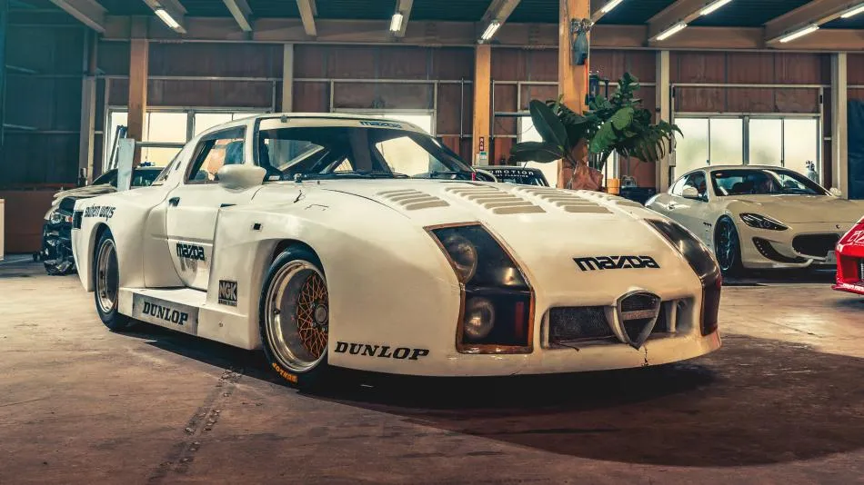
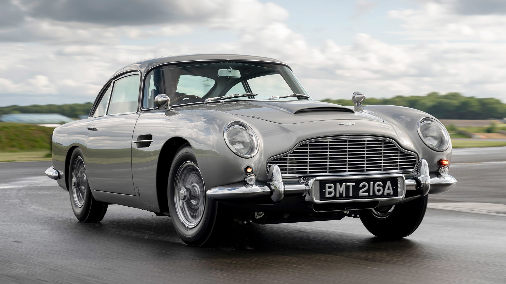
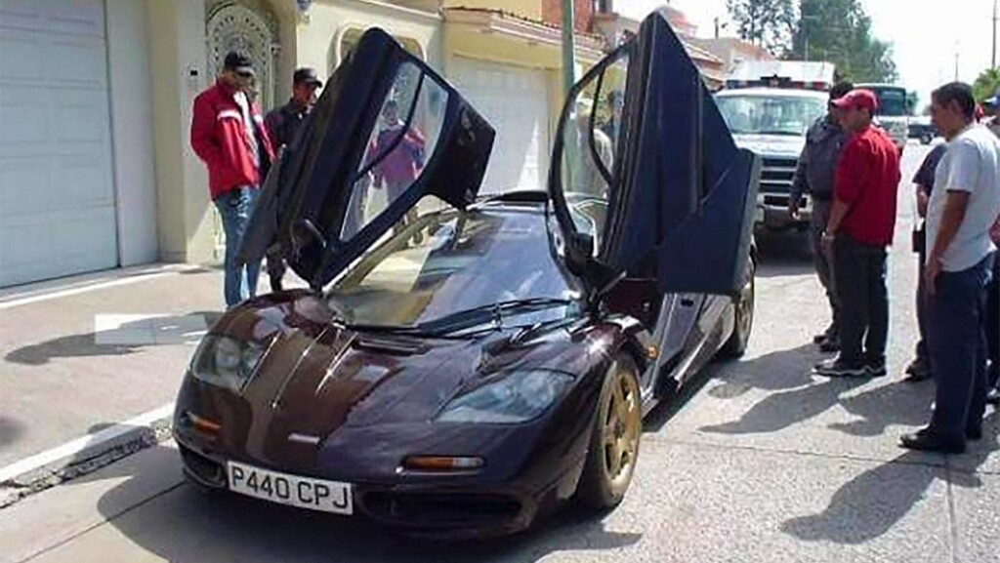
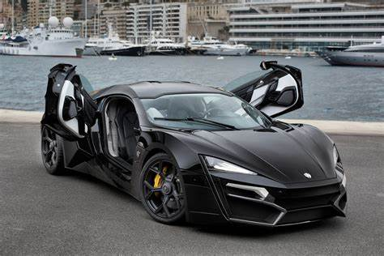

Mazda RX-7

La historia de Mazda en Le Mans se puede asociar a un coche: el Mazda 787B de 1991, que salió victorioso y dejó a todos boquiabiertos por razones como su espectacular sonido. Sin embargo, la marca japonesa ya tuvo algún intento anterior en las 24 horas de Le Mans y hay un coche extremadamente raro que formó parte de aquellos comienzos: el Mazda RX-7 254i.
En la carrera de 1982, Mazda participó en esta inconfundible carrera de resistencia tomando lo que había aprendido de pruebas como las 24 horas de Daytona. Así creó el 254i, un coche basado en el Mazda RX-7 FB, pero que contaba con todo tipo de mejoras de competición. ¿Lo más llamativo? Su carrocería ancha, en la línea de lo que se podía ver en aquella época.
Aston Martin DB5

El Aston Martin DB5 es un automóvil de lujo y gran turismo (GT) fabricado por la marca británica Aston Martin, diseñado por el carrocero italiano Carrozzeria Touring Superleggera.1 Salió al mercado en 1963, como una evolución de la serie final del DB4.
A pesar de que no fue el primero de la serie DB, el DB5 es el coche más conocido del universo cinematográfico de James Bond, apareciendo por primera vez en la película Goldfinger en 1964.
McLaren F1

hay una unidad en especial que guarda una serie de mitos e historias populares que involucran a Joaquín Guzmán Loera, mejor conocido como El Chapo : el McLaren F1 VIN 039. Si bien hay un gran número de autos perdidos y abandonados en el mundo, el McLaren F1 #039 llamó la atención de Ed Bolian, fundador de VINWiki, página encargada de rastrear la historia de los vehículos más importantes de la historia.Los registros indican que el McLaren F1 #039 terminó en manos de un cliente en Reino Unido y se perdió por un corto periodo de tiempo; súbitamente, fue encontrado en México, precisamente en Sinaloa y supuestamente fue comprado por El Chapo .
Lykan

El Lykan HyperSport es un exclusivo automóvil superdeportivo coupé desarrollado por la empresa libanesa W Motors y diseñado por Anthony Janarelly, un diseñador inglés egresado de la Universidad de Coventry.Fue presentado en enero de 2013 en el Salón Internacional del Automóvil de Catar y es uno de los automóviles más caros y exclusivos del mundo, así como el primer superdeportivo de origen árabe. El auto se produce en colaboración con Magna Steyr y Studiotorino, de Italia; y con Ruf Automobile, de Alemania.